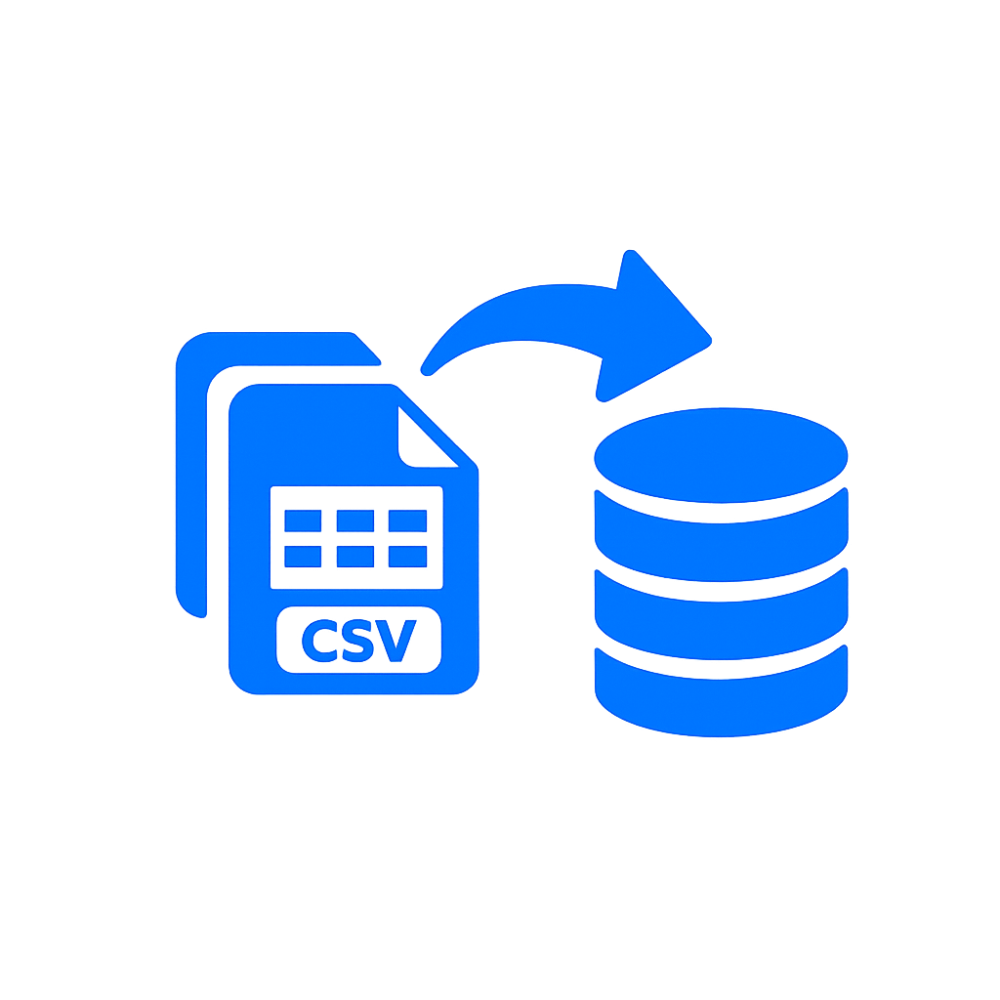

Streamline and accelerate large-scale ERP data migrations with zero web timeouts and total safety. Simply drop your CSV or XLSX files, leverage Smart Column Auto-Mapping with fuzzy matching, perform exhaustive Pre-Commit Dry-Run Validations, execute via Chunked Parallel Batches, and rollback seamlessly with One-Click Undo.
Up to 3,000 rows/sec. Context tracking suppression, pre-resolved relational caching in memory, and multi-record batch creations.
Accidental errors or bad mappings? Revert all created and modified records in reverse dependency sequence safely and effortlessly.
Verify required fields, foreign key lookups, data types, and file uniqueness before writing a single byte to the database.
Scales up to 1,000,000 rows. Transactional batch work units with heartbeat tracking survive server restarts with zero lost progress.
Compliant with PRD Section 6: Unified, frictionless UI designed for consultants and ERP operators
Select from 19 predefined types or generic models. Drag & drop CSV or XLSX with automatic charset detection.
UTF-8 / Excel / BOMFuzzy matching auto-maps column headers against field labels and technical names. Live 20-row preview.
Fuzzy Matching • PresetsSelect mode (Create/Update/Upsert), engine speed (Fast/Balanced/Safe), batch sizing, and error policies.
Parallel Workers • BatchingDry-run verification. Real-time background processing with live progress bar, speed metrics, and 1-click Undo.
Live Bus • 1-Click RollbackPre-calibrated data models configured in strict dependency order, ensuring referenced master data exists prior to transactional imports:
Forget tedious manual field matching. Intelligent algorithms analyze column headers and map fields automatically:
Enterprise peace of mind. Every import session tracks exact record creations and state snapshots:
Designed for massive data sets without requiring third-party queue dependencies:
| ID | Requirement Description | Implementation Details | Status |
|---|---|---|---|
| UAT-01 | 4-Step Interactive Studio Wizard | Source upload, fuzzy column mapping, engine options, and pre-commit review. | Passed |
| UAT-02 | Smart Auto-Mapping with Fuzzy Matching | 100% exact match on standard templates and ≥90% fuzzy match on arbitrary files. | Passed |
| UAT-03 | 100% Dry-Run Simulation Before Write | Validates required fields, types, and relational foreign keys with zero DB commits. | Passed |
| UAT-04 | Large Scale & Restart Resilience | Batch work units with checkpointing survive server restarts and eliminate web timeouts. | Passed |
| UAT-05 | One-Click Instant Undo Rollback | Reverts created and updated records in reverse dependency sequence safely. | Passed |
| UAT-06 | 19 Ordered Data Types & Sample Pack | Complete sequence covering Master, Stock, Accounting, and Transactions with sample CSVs. | Passed |
| UAT-07 | Granular Security & Audit Trail | Migration User and Migration Manager groups, strict company isolation, and chatter audit logs. | Passed |
Developed by Arif N Ramadhan • Industrial IT & Odoo ERP Solutions.
For custom database connectors (Oracle, SAP, MSSQL), direct REST API adapters, or cutover assistance for large-scale enterprise databases, feel free to contact us.